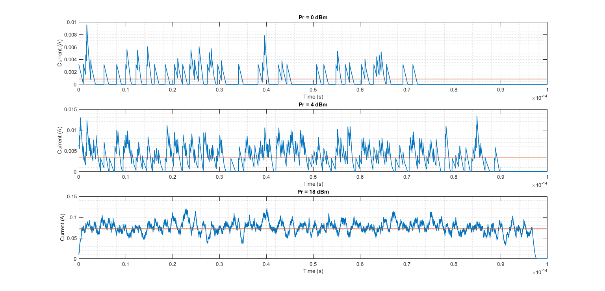
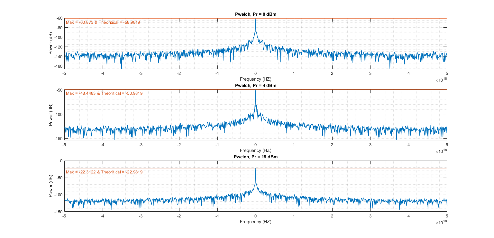
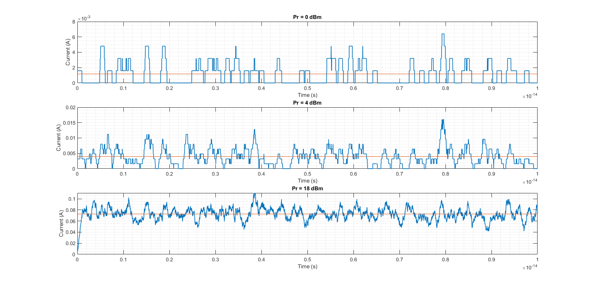
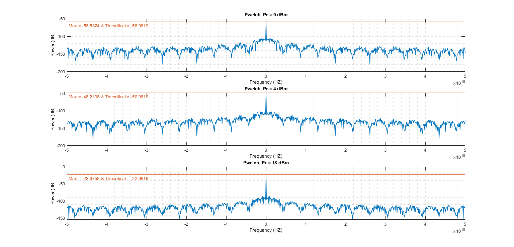

Contents
close all; clear; clc
Initializations
Pr = [0, 4, 18] ;
Pr_new = 10 .^ ( (Pr - 30 ) ./ 10 ) ;
h = 6.62607015e-34 ;
e = 1.602176634e-19 ;
Ts = 1e-19 ;
fs = 1 / Ts ;
t = 0 : Ts : 1e-14 ;
T = t(end) ;
c = 3e8 ;
etha = 0.9 ;
landa = 1550e-9 ;
f = c / landa ;
Phi = Pr_new / ( h * f ) ;
Triangle Response
delta_t = T / 100 ;
arz_az_mabda = 2 * e / delta_t ;
output = zeros(1 , length(t)) ;
figure(WindowState="maximized") ;
figure(WindowState="maximized") ;
fprintf("*****************************************************" + ...
"***************************\n")
fprintf("Triangle Response : \n");
for i = 1 : 3
lambda = etha * T * Phi(i) ;
mu = T / lambda ;
num_of_received_photons = poissrnd(lambda) ;
start = 0 ;
for num = 1 : num_of_received_photons
output = output + DrawTriangle(Ts, start, arz_az_mabda, delta_t , T) ;
start = start + exprnd(mu) ;
end
figure(1) ;
subplot(3, 1, i) ;
plot(t, output, LineWidth=1.2, Color="#0072BD") ;
grid minor ;
title(['Pr = ', num2str(Pr(i)), ' dBm']);
xlabel("Time (s)") ;
ylabel("Current (A)");
yline(mean(output), LineWidth=1.2 , Color="#D95319");
fprintf("( Practical ) :\t\t Pr = %2d -> Mean = %e & Var = %e \n", Pr(i), ...
mean(output), var(output));
fprintf("( Theoretical ) :\t Pr = %2d -> Mean = %e & Var = %e \n", Pr(i), ...
e*etha*Phi(i), (e^2)*etha*Phi(i)/T);
figure(2) ;
[pxx , w] = pwelch(output, length(output), length(output)/5, 1024, fs, ...
'centered', 'power');
pxx = 10*log10(pxx);
subplot(3, 1, i) ;
plot(w, pxx, LineWidth=1.2, Color="#0072BD");
grid minor ;
title(['Pwelch, Pr = ', num2str(Pr(i)), ' dBm']);
xlabel('Frequency (HZ)');
ylabel('Power (dB)');
yline(max(pxx),Label=['Max = ', num2str(max(pxx)), ' & Theoritical = ', ...
num2str( 10*log10((e*etha*Phi(i)) ^2) )], LineWidth=1.2 , ...
Color="#D95319" , LabelVerticalAlignment="bottom" , ...
LabelHorizontalAlignment="left");
end
********************************************************************************
Triangle Response :
( Practical ) : Pr = 0 -> Mean = 8.347971e-04 & Var = 1.839756e-06
( Theoretical ) : Pr = 0 -> Mean = 1.124365e-03 & Var = 1.801431e-08
( Practical ) : Pr = 4 -> Mean = 3.403411e-03 & Var = 6.996382e-06
( Theoretical ) : Pr = 4 -> Mean = 2.824277e-03 & Var = 4.524991e-08
( Practical ) : Pr = 18 -> Mean = 7.336660e-02 & Var = 3.270545e-04
( Theoretical ) : Pr = 18 -> Mean = 7.094264e-02 & Var = 1.136626e-06
 
Square Response
delta_t = T / 100 ;
output = zeros(1 , length(t)) ;
figure(WindowState="maximized");
figure(WindowState="maximized") ;
fprintf("*****************************************************" + ...
"***************************\n");
fprintf("Square Response : \n");
for i = 1 : 3
lambda = etha * T * Phi(i) ;
mu = T / lambda ;
num_of_received_photons = poissrnd(lambda) ;
start = 0 ;
for num = 1 : num_of_received_photons
output = output + DrawSquare(Ts, start, delta_t, T) ;
start = start + exprnd(mu) ;
end
figure(3);
subplot(3, 1, i) ;
plot(t, output, LineWidth=1.2, Color="#0072BD") ;
grid minor ;
title(['Pr = ', num2str(Pr(i)), ' dBm']) ;
xlabel("Time (s)") ;
ylabel("Current (A)");
yline(mean(output), LineWidth=1.2 , Color="#D95319");
fprintf("( Practical ) :\t\t Pr = %2d -> Mean = %e & Var = %e \n", Pr(i), ...
mean(output), var(output));
fprintf("( Theoretical ) :\t Pr = %2d -> Mean = %e & Var = %e \n", Pr(i), ...
e*etha*Phi(i), (e^2)*etha*Phi(i)/T);
figure(4) ;
[pxx , w] = pwelch(output, length(output), length(output)/5, 1024, ...
fs, 'centered', 'power');
pxx = 10*log10(pxx);
subplot(3, 1, i) ;
plot(w, pxx, LineWidth=1.2, Color="#0072BD");
grid minor ;
title(['Pwelch, Pr = ', num2str(Pr(i)), ' dBm']);
xlabel('Frequency (HZ)');
ylabel('Power (dB)');
yline(max(pxx),Label=['Max = ', num2str(max(pxx)), ' & Theoritical = ', ...
num2str( 10*log10((e*etha*Phi(i)) ^2) )], LineWidth=1.2 , ...
Color="#D95319" , LabelVerticalAlignment="bottom" , ...
LabelHorizontalAlignment="left");
end
function y = DrawTriangle(Ts , start_point, arz_az_mabda, delta_t , t_end)
t = 0 : Ts : t_end ;
gradient = arz_az_mabda / delta_t ;
y = -gradient * (t-start_point) + arz_az_mabda ;
for i = 1 : length(t)
if ( i <= start_point/Ts ) || ( i >= (start_point + delta_t)/Ts + 1 )
y(i) = 0 ;
end
end
end
function y = DrawSquare(Ts, start_point, delta_t, t_end)
e = 1.602176634e-19 ;
t = 0 : Ts : t_end ;
y = (e/delta_t) .* ones(1 , length(t)) ;
for i = 1 : length(t)
if ( i <= start_point/Ts ) || ( i >= (start_point + delta_t)/Ts + 1 )
y(i) = 0 ;
end
end
end
********************************************************************************
Square Response :
( Practical ) : Pr = 0 -> Mean = 1.170731e-03 & Var = 1.970030e-06
( Theoretical ) : Pr = 0 -> Mean = 1.124365e-03 & Var = 1.801431e-08
( Practical ) : Pr = 4 -> Mean = 3.945224e-03 & Var = 7.515138e-06
( Theoretical ) : Pr = 4 -> Mean = 2.824277e-03 & Var = 4.524991e-08
( Practical ) : Pr = 18 -> Mean = 7.263187e-02 & Var = 1.246538e-04
( Theoretical ) : Pr = 18 -> Mean = 7.094264e-02 & Var = 1.136626e-06
 